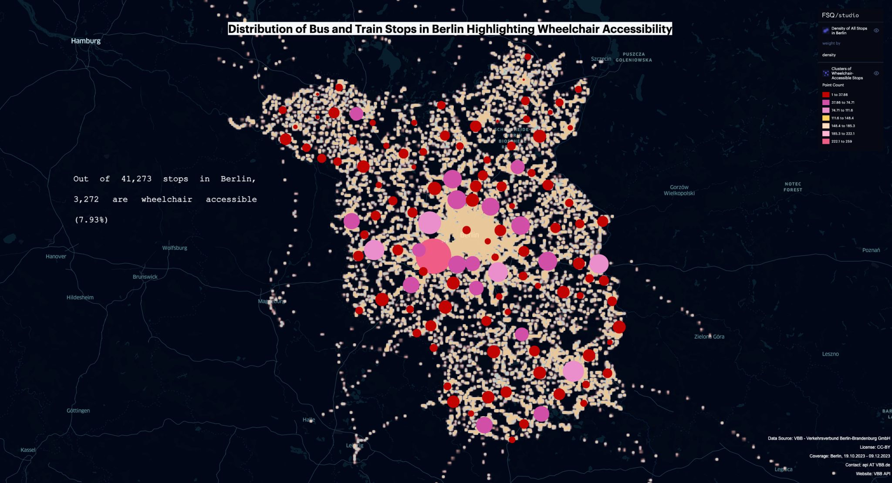

Überblick
Dieses Projekt untersucht die Barrierefreiheit von Berliner ÖPNV-Haltestellen anhand von GTFS-Daten aus Daten Berlin. Im Mittelpunkt steht die Visualisierung der Verteilung aller Haltestellen sowie die Hervorhebung, wo rollstuhlgerechte Haltestellen konzentriert oder weniger vorhanden sind.
Methodik
GTFS-Haltestellendaten
Verwendung der Berliner GTFS-Haltestellenattribute zur Unterscheidung aller Haltestellen von rollstuhlgerechten Haltestellen.
Heatmap-Visualisierung
Erstellung von QGIS-Heatmaps zur Darstellung der räumlichen Verteilung und Dichte der Berliner ÖPNV-Haltestellen.
Rollstuhlgerechte Haltestellencluster
Aufbau größenvarianter Punktcluster in QGIS — größere Cluster zeigen mehr rollstuhlgerechte Haltestellen an, kleinere Cluster weisen auf Bereiche mit weniger barrierefreien Haltestellen hin.
Foursquare Studio-Kartierung
Verbesserung der finalen Barrierefreiheits-Visualisierung in Foursquare Studio für eine klare Kommunikation von Mobilitätslücken in der ÖPNV-Planung.
Tools & Technologien
- GTFS-ÖPNV-Haltestellendaten von Daten Berlin
- QGIS für Heatmaps und rollstuhlgerechte Haltestellencluster
- Foursquare Studio für die finale Visualisierung
- Barrierefreiheitsorientierte Datenvisualisierung für die städtische Mobilitätsplanung
Ergebnis
Die Karten zeigen, wo rollstuhlgerechte ÖPNV-Haltestellen konzentriert sind und wo kleinere Cluster auf potenzielle Prioritäten für Infrastrukturverbesserungen hindeuten. Die Ergebnisse unterstützen Planungsdiskussionen für ein inklusiveres ÖPNV-System, in dem Mobilität als Recht für alle verstanden wird.